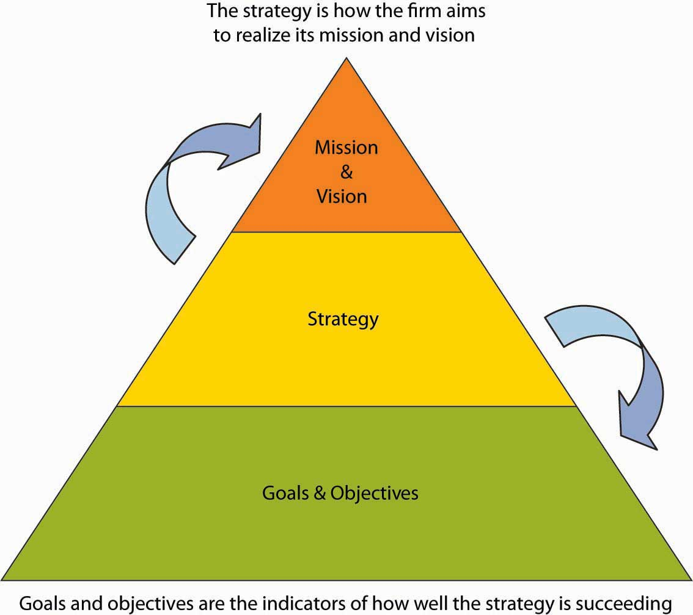

Reading this chapter will help you do the following:
As you are reminded in the figure, the letter “P” in the P-O-L-C framework stands for “planning.” Good plans are meant to achieve something—this something is captured in verbal and written statements of an organization’s mission and vision (its purpose, in addition to specific goals and objectives). With a mission and vision, you can craft a strategy for achieving them, and your benchmarks for judging your progress and success are clear goals and objectives. Mission and vision communicate the organization’s values and purpose, and the best mission and vision statements have an emotional component in that they incite employees to delight customers. The three “planning” topics of your principles of management cover (1) mission and vision, (2) strategy, and (3) goals and objectives. The figure summarizes how these pieces work together.
Figure 4.2 Mission and Vision as P-O-L-C Components

Figure 4.3 Mission and Vision in the Planning Process
